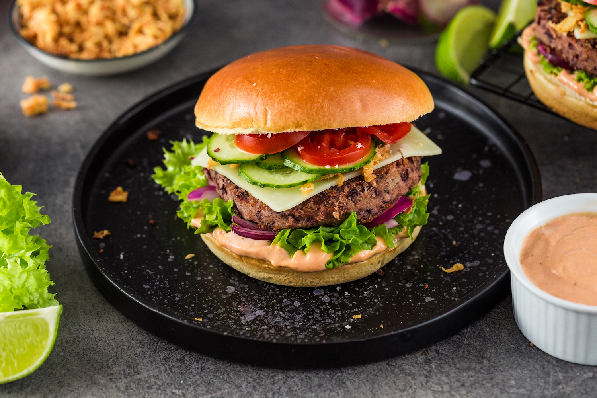

Przepisy na dania
Przepisy na różne obiady zopraszam😁
Chcesz wiedzieć jak zrobić pyszny obiad?🍔Zobacz naszą strone to się dowiesz.

Na początek będzie przepis na burgera zapraszam!🍔
-Na początek rozkrajasz bułkę na pół.Potem dolną część smarujesz kechupem a górną majonezem,następnie dodajesz na dół-sałatę i pomidora a na górę-pokrojonego ogórka i ser, i na sam koniec dajesz mięso np.wołowe i dajesz do piekarnika na 5min na 150stopni.
Teraz przepis na spaghetti🍝!
Na głębokiej patelni rozgrzej około 2 łyżki oliwy z oliwek.
Na rozgrzaną patelnię wrzuć czosnek i cebulę, a po chwili dodaj mięso, rozdrabniaj je żeby były drobne kawałki.
Do mięsa dodaj przyprawy oraz koncentrat.
Makaron ugotuj al dente, podawaj go z sosem, serem, i bazylią.
Stripsy niczym z KFC🐔
Rozgrzewam olej w głębokiej patelni lub we frytkownicy do 180stopni.Na rozgrzany olej wkładam partiami kurczaka i smażę kilka minut na średnim ogniu żeby miały złoty kolor. Usmażone stripsy osączam na papierowym ręczniku.